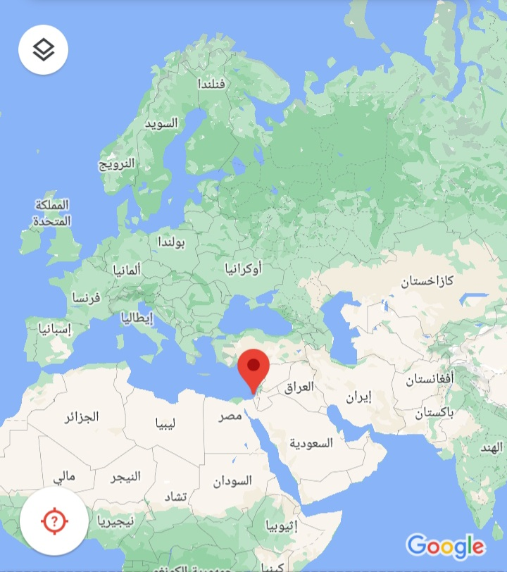

About KYTC
The Khan Younis Training College seeks to achieve its pioneering goal among the technical and applied academic institutions in the Gaza Strip and the region by making its graduates the most competitive in the local and global labor market, by continuing to offer distinguished diploma programs in professional and technical specializations and seeking to establish bachelor's programs in applied sciences to keep pace with environmental and economic variables. And industrial and development in the local and global labor market. Mission: We are committed to offering technical and professional programs for our female and male students at a high and distinguished level, with full commitment to our values and beliefs, that our graduates possess the necessary language capabilities in the process of communication in the local and global work environment, and the technical skills necessary to adapt to any work environment and any new technology
technical program
E-Business
General secondary in all its branches so that the applicant has a minimum average of 70% in the literary and scientific branches and 75% in the rest of the other branches
Business and Office management
General secondary in all its branches so that the applicant has a minimum average of 70% in the literary and scientific branches and 75% in the rest of the other branches
E-Nurrsing
High school in the scientific branch, so that the applicant has a GPA of no less than 80% in the scientific branch
Health
General secondary in all its branches so that the applicant has a minimum average of 70% in the literary and scientific branches and 75% in the rest of the other branches
trade programs
Blacksmithing and welding
Construction work
Tile work
Plumbing works
KYTC Location
